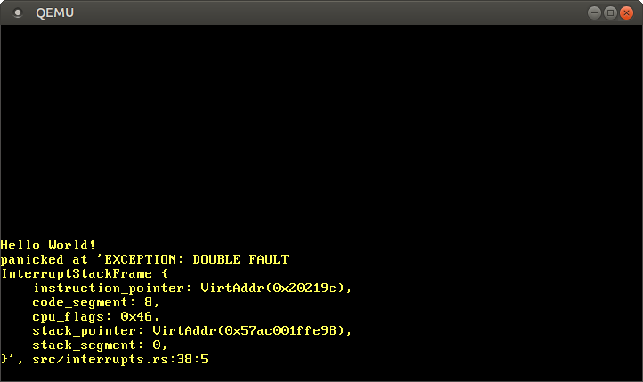

더블 폴트 (Double Fault)
번역된 내용 : 이것은 커뮤니티 멤버가 Double Faults 포스트를 번역한 글입니다. 부족한 설명이나 오류, 혹은 시간이 지나 더 이상 유효하지 않은 정보를 발견하시면 제보해주세요!
이번 글에서는 CPU가 예외 처리 함수를 호출하는 데에 실패할 때 발생하는 더블 폴트 (double fault) 예외에 대해 자세히 다룹니다. 더블 폴트 예외를 처리함으로써 시스템 재부팅을 발생시키는 치명적인 트리플 폴트 (triple fault) 예외를 피할 수 있습니다. 트리플 폴트가 발생할 수 있는 모든 경우에 대비하기 위해 Interrupt Stack Table 을 만들고 별도의 커널 스택에서 더블 폴트를 처리할 것입니다.
이 블로그는 GitHub 저장소에서 오픈 소스로 개발되고 있으니, 문제나 문의사항이 있다면 저장소의 ‘Issue’ 기능을 이용해 제보해주세요. 페이지 맨 아래에 댓글을 남기실 수도 있습니다. 이 포스트와 관련된 모든 소스 코드는 저장소의 post-06 브랜치에서 확인하실 수 있습니다.
목차
🔗더블 폴트 (Double Fault)란 무엇일까요?
간단히 말하면, 더블 폴트는 CPU가 예외 처리 함수를 호출하는 것에 실패했을 때 발생하는 예외입니다. 예를 들면 페이지 폴트가 발생했는데 인터럽트 서술자 테이블 (Interrupt Descriptor Table; IDT) 에 등록된 페이지 폴트 처리 함수가 없을 때 더블 폴트가 예외가 발생합니다. 비유한다면 C++의 catch(..)문이나 Java 및 C#의 catch(Exception e)문처럼 모든 종류의 예외를 처리할 수 있다는 점에서 유사합니다.
더블 폴트는 다른 예외들과 다를 게 없습니다. IDT 내에서 배정된 벡터 인덱스(8)가 있고, IDT에 해당 예외를 처리할 일반 함수를 정의할 수 있습니다. 더블 폴트 처리 함수를 제공하는 것은 매우 중요한데, 더블 폴트가 처리되지 않으면 치명적인 트리플 폴트 가 발생하기 때문입니다. 트리플 폴트를 처리하는 것은 불가능해서 대부분의 하드웨어는 시스템을 리셋하는 방식으로 대응합니다.
🔗더블 폴트 일으키기
예외 처리 함수가 등록되지 않은 예외를 발생시켜 더블 폴트를 일으켜 보겠습니다.
// in src/main.rs
#[no_mangle]
pub extern "C" fn _start() -> ! {
println!("Hello World{}", "!");
blog_os::init();
// 페이지 폴트 일으키기
unsafe {
*(0xdeadbeef as *mut u64) = 42;
};
// 이전과 동일
#[cfg(test)]
test_main();
println!("It did not crash!");
loop {}
}
unsafe 키워드를 사용해 유효하지 않은 메모리 주소 0xdeadbeef에 값을 씁니다. 페이지 테이블에서 해당 가상 주소는 실제 물리 주소에 매핑되지 않았기에 페이지 폴트가 발생합니다. 아직 우리가 IDT에 페이지 폴트 처리 함수를 등록하지 않았기 때문에 이어서 더블 폴트가 발생합니다.
이제 커널을 실행시키면 커널이 무한히 부팅하는 루프에 갇히는 것을 확인하실 수 있습니다. 커널이 루프에 갇히는 이유는 아래와 같습니다.
- CPU가 메모리 주소
0xdeadbeef에 값을 쓰려고 시도한 것 때문에 페이지 폴트가 발생합니다. - CPU는 IDT에서 페이지 폴트에 대응하는 엔트리를 확인하지만, 페이지 폴트 처리 함수가 등록되어 있지 않습니다. 호출할 수 있는 페이지 폴트 처리 함수가 없어 더블 폴트가 발생합니다.
- CPU는 IDT에서 더블 폴트에 대응하는 엔트리를 확인하지만, 더블 폴트 처리 함수가 등록되어 있지 않습니다. 이후 트리플 폴트 가 발생합니다.
- 트리플 폴트는 치명적입니다. 다른 실제 하드웨어들처럼 QEMU 또한 시스템을 리셋합니다.
이런 상황에서 트리플 폴트 발생을 막으려면 페이지 폴트 또는 더블 폴트의 처리 함수를 등록해야 합니다. 어떤 경우에서든 트리플 폴트만은 막아야 하므로, 처리되지 않은 예외가 있을 때 호출되는 더블 폴트의 처리 함수부터 먼저 작성하겠습니다.
🔗더블 폴트 처리 함수
더블 폴트도 일반적인 예외로서 오류 코드를 가집니다. 따라서 더블 폴트 처리 함수를 작성할 때 이전에 작성한 breakpoint 예외 처리 함수와 비슷하게 작성할 수 있습니다.
// in src/interrupts.rs
lazy_static! {
static ref IDT: InterruptDescriptorTable = {
let mut idt = InterruptDescriptorTable::new();
idt.breakpoint.set_handler_fn(breakpoint_handler);
idt.double_fault.set_handler_fn(double_fault_handler); // 새롭게 추가함
idt
};
}
// 새롭게 추가함
extern "x86-interrupt" fn double_fault_handler(
stack_frame: InterruptStackFrame, _error_code: u64) -> !
{
panic!("EXCEPTION: DOUBLE FAULT\n{:#?}", stack_frame);
}
우리가 작성한 더블 폴트 처리 함수는 짧은 오류 메시지와 함께 예외 스택 프레임의 정보를 출력합니다. 더블 폴트 처리 함수의 오류 코드가 0인 것은 이미 아는 사실이니 굳이 출력할 필요가 없습니다. breakpoint 예외 처리 함수와 비교해 하나 다른 점은 더블 폴트 처리 함수가 발산하는 함수라는 것인데, 그 이유는 더블 폴트로부터 반환하는 것을 x86_64 아키텍처에서 허용하지 않기 때문입니다.
이제 커널을 실행시키면 더블 폴트 처리 함수가 호출되는 것을 확인하실 수 있습니다.

성공입니다! 어떤 일들이 일어났는지 단계별로 살펴보겠습니다.
- CPU가 메모리 주소
0xdeadbeef에 값을 적으려 하고, 그 결과 페이지 폴트가 발생합니다. - 이전처럼 CPU는 IDT에서 페이지 폴트에 대응하는 엔트리를 확인하지만, 등록된 처리 함수가 없음을 확인합니다. 그 결과 더블 폴트가 발생합니다.
- CPU의 제어 흐름이 등록된 더블 폴트 처리 함수로 점프합니다.
CPU가 더블 폴트 처리 함수를 호출할 수 있기에, 트리플 폴트와 무한 재부팅 루프는 더 이상 발생하지 않습니다.
별로 어렵지 않군요! 그럼에도 이 주제 하나에 이 글 전체를 할애한 이유가 궁금하신가요? 사실, 현재 우리는 대부분의 더블 폴트를 처리할 수는 있지만, 현재의 커널 구현으로는 더블 폴트를 처리하지 못하는 특수한 경우들이 아직 남아 있습니다.
🔗더블 폴트의 원인들
특수한 경우들을 살펴보기 전에, 우선 더블 폴트가 일어나는 엄밀한 원인에 대해 파악해야 합니다. 본문의 윗부분에서는 더블 폴트를 설명할 때 다소 애매하고 느슨한 정의를 사용했습니다.
더블 폴트는 CPU가 예외 처리 함수를 호출하는 것에 실패했을 때 발생하는 예외입니다.
“예외 처리 함수를 호출하는 것에 실패했을 때” 라는 게 정확히 무슨 뜻일까요? 예외 처리 함수가 등록되어 있지 않아 호출에 실패했다? 예외 처리 함수가 스왑-아웃 되어 있어 호출에 실패했다? 그리고 예외 처리 함수 자체가 다시 예외를 발생시키면 어떻게 될까요?
예를 들어, 아래의 각각의 상황들을 가정했을 때 무슨 일이 일어날지 고민해 봅시다.
- breakpoint 예외가 발생한 시점에 breakpoint 예외 처리 함수가 스왑-아웃 되어 있는 경우?
- 페이지 폴트가 발생한 시점에 페이지 폴트 처리 함수가 스왓-아웃 되어 있는 경우?
- divide-by-zero 예외 처리 함수가 breakpoint 예외를 발생시킨 시점에 breakpoint 예외 처리 함수가 스왑-아웃 되어 있는 경우?
- 커널이 스택 오버 플로우를 일으켜 보호 페이지 (guard page) 에 접근하는 경우?
다행히 AMD64 매뉴얼 (PDF)에서 더블 폴트의 명확한 정의를 제시합니다 (매뉴얼 섹션 8.2.9 참조). 매뉴얼의 정의에 따르면, “더블 폴트 예외는 1번째 발생한 예외를 처리하는 도중 2번째 예외가 발생한 경우에 발생할 수 있다” 합니다. 여기서 “발생할 수 있다” 라는 표현이 중요한데, 더블 폴트는 아래의 표에서 보이는 것처럼 특수한 조합의 예외들이 순서대로 일어났을 때에만 발생합니다.
예를 들면 divide-by-zero 예외 뒤에 페이지 폴트가 발생하는 것은 괜찮지만 (페이지 폴트 처리 함수가 호출됨), divide-by-zero 예외 뒤에 general-protection fault 예외가 발생하면 더블 폴트가 발생합니다.
위 테이블을 이용하면 위에서 했던 질문 중 첫 3개에 대해 대답할 수 있습니다.
- breakpoint 예외가 발생한 시점에 해당 예외 처리 함수가 스왑-아웃 되어 있는 경우, 페이지 폴트 가 발생하고 페이지 폴트 처리 함수 가 호출됩니다.
- 페이지 폴트가 발생한 시점에 페이지 폴트 처리 함수가 스왑-아웃 되어 있는 경우, 더블 폴트 가 발생하고 더블 폴트 처리 함수 가 호출됩니다.
- divide-by-zero 예외 처리 함수가 breakpoint 예외를 일으키는 경우, CPU가 breakpoint 예외 처리 함수의 호출을 시도합니다. breakpoint 예외 처리 함수가 스왑-아웃 되어 있는 경우, 페이지 폴트 가 발생하고 페이지 폴트 처리 함수 가 호출됩니다.
사실 임의의 예외에 대한 처리 함수가 IDT에 없다는 것만으로 더블 폴트가 발생하는 것이 아닙니다. 예외가 발생하면 CPU는 그 예외에 대응하는 IDT 엔트리를 참조합니다. 해당 엔트리 값이 0인 경우 (= 예외 처리 함수가 등록되어 있지 않음), general protection fault 예외가 발생합니다. 우리는 해당 예외를 처리할 함수를 등록하지 않았기 때문에, 새로운 general protection fault 예외가 또 발생합니다. general protection fault가 이어서 2번 일어났으니, 위 테이블에 따라 더블 폴트가 발생합니다.
🔗커널 스택 오버플로우
이제 위의 질문들 중 마지막 4번째 질문을 살펴보겠습니다.
커널이 스택 오버 플로우를 일으켜 보호 페이지 (guard page) 에 접근하는 경우, 무슨 일이 일어날까요?
보호 페이지는 스택의 맨 아래에 위치하면서 스택 오버플로우를 감지하는 특별한 메모리 페이지입니다. 해당 페이지는 어떤 물리 프레임에도 매핑되지 않으며, CPU가 해당 페이지에 접근하면 물리 메모리에 접근하는 대신 페이지 폴트가 발생합니다. 부트로더가 커널 스택의 보호 페이지를 초기화하며, 이후 커널 스택 오버플로우가 발생하면 페이지 폴트 가 발생합니다.
페이지 폴트가 발생하면 CPU는 IDT에서 페이지 폴트 처리 함수를 찾고 스택에 인터럽트 스택 프레임 (interrupt stack frame)을 push 하려고 합니다. 하지만 현재의 스택 포인터는 물리 프레임이 매핑되지 않은 보호 페이지를 가리키고 있습니다. 따라서 2번째 페이지 폴트가 발생하고, 그 결과 더블 폴트가 발생합니다 (위 테이블 참조).
CPU는 이제 더블 폴트 처리 함수 를 호출하려고 시도합니다. 하지만, 더블 폴트 발생 시 CPU는 또 예외 스택 프레임 (= 인터럽트 스택 프레임)을 스택에 push하려고 합니다. 스택 포인터는 여전히 보호 페이지를 가리키고, 따라서 3번째 페이지 폴트 발생 후 트리플 폴트 가 발생하고 시스템이 재부팅 됩니다. 우리가 지금 가진 더블 폴트 처리 함수로는 이 상황에서 트리플 폴트를 막을 수 없습니다.
역시 백문이 불여일견이죠! 무한 재귀 함수를 호출해 손쉽게 커널 스택오버플로우를 일으켜 봅시다.
// in src/main.rs
#[no_mangle] // 이 함수의 이름을 mangle하지 않습니다
pub extern "C" fn _start() -> ! {
println!("Hello World{}", "!");
blog_os::init();
fn stack_overflow() {
stack_overflow(); // 재귀 호출할 때마다 스택에 반환 주소를 push 합니다
}
// 스택 오버플로우 일으키기
stack_overflow();
[…] // test_main(), println(…), and loop {}
}
이 코드를 QEMU에서 실행하면 시스템이 또 무한 재부팅 루프에 갇히는 것을 확인할 수 있습니다.
이 문제를 어떻게 피할 수 있을까요? CPU 하드웨어가 예외 스택 프레임을 push 하는 것이라서, 커널 코드를 통해 스택 프레임의 push 과정을 생략할 수는 없습니다. 그래서 더블 폴트가 발생한 시점에는 늘 커널 스택이 유효하도록 보장할 수 있는 방법을 찾아야 합니다. 다행히도, x86_64 아키텍처는 이 문제에 대한 해답을 가지고 있습니다.
🔗스택 교체하기
x86_64 아키텍처는 예외 발생 시 스택을 미리 지정한 다른 안전한 스택으로 교체하는 것이 가능합니다. 이러한 스택 교체는 하드웨어 단에서 일어나고, 따라서 CPU가 예외 스택 프레임을 스택에 push 하기 전에 스택을 교체하는 것이 가능합니다.
이러한 스택 교체는 인터럽트 스택 테이블 (Interrupt Stack Table; IST) 을 사용해 진행됩니다. IST는 안전한 것으로 알려진 7개의 다른 스택들의 주소를 저장하는 테이블입니다. IST의 구조를 Rust 코드 형식으로 표현하자면 아래와 같습니다.
struct InterruptStackTable {
stack_pointers: [Option<StackPointer>; 7],
}
각 예외 처리 함수는 IDT 엔트리의 stack_pointers 필드를 통해 IST의 스택 중 하나를 사용하도록 선택할 수 있습니다. 예를 들어, 우리의 더블 폴트 처리 함수가 IST의 1번째 스택을 사용하도록 설정할 수 있습니다. 그 후에는 더블 폴트가 발생할 때마다 CPU가 스택을 IST의 1번째 스택으로 교체합니다. 스택에 새로운 데이터가 push 되기 전에 스택 교체가 이뤄지기 때문에 트리플 폴트를 피할 수 있습니다.
🔗IST와 TSS
인터럽트 스택 테이블 (IST)은 오래되어 이젠 구식이 된 Task State Segment (TSS)라는 구조체의 일부입니다. 예전에 TSS는 다양한 정보 (예: 프로세서 레지스터들의 상태 값)를 저장하거나 하드웨어를 이용한 컨텍스트 스위치을 지원하는 용도로 사용됐습니다. 하지만 하드웨어를 이용한 컨텍스트 스위치를 64비트 모드에서부터는 지원하지 않게 되었고, 그 이후 TSS의 구조는 완전히 바뀌었습니다.
x86_64 아키텍처에서 TSS는 특정 태스크 (task) 관련 정보를 보관하지 않습니다. 대신 TSS는 두 개의 스택 테이블을 보관합니다 (IST가 그중 하나입니다). 32비트 시스템의 TSS와 64비트 시스템의 TSS의 유일한 공통 필드는 I/O port permissions bitmap에 대한 포인터 하나 뿐입니다.
64비트 TSS는 아래의 구조를 가집니다.
| Field | Type |
|---|---|
| (reserved) | u32 |
| Privilege Stack Table | [u64; 3] |
| (reserved) | u64 |
| Interrupt Stack Table | [u64; 7] |
| (reserved) | u64 |
| (reserved) | u16 |
| I/O Map Base Address | u16 |
CPU가 특권 레벨을 교체할 때 Privilege Stack Table 을 사용합니다. CPU가 사용자 모드일 때 (특권 레벨 = 3) 예외가 발생하면, CPU는 예외 처리 함수를 호출에 앞서 커널 모드로 전환합니다 (특권 레벨 = 0). 이 경우 CPU는 스택을 Privilege Stack Table의 0번째 스택으로 교체합니다 (특권 레벨이 0이라서). 아직 우리의 커널에서 동작하는 사용자 모드 프로그램이 없으므로, 일단은 이 테이블에 대해 걱정하지 않아도 됩니다.
🔗TSS 생성하기
새로운 TSS를 생성하고 TSS의 인터럽트 스택 테이블에 별도의 더블 폴트 스택을 갖추도록 코드를 작성하겠습니다. 우선 TSS를 나타낼 구조체가 필요하기에, x86_64 크레이트가 제공하는 TaskStateSegment 구조체를 사용하겠습니다.
새로운 모듈 gdt에 TSS를 생성합니다 (모듈 이름이 왜 gdt인지는 이후에 납득이 가실 겁니다).
// in src/lib.rs
pub mod gdt;
// in src/gdt.rs
use x86_64::VirtAddr;
use x86_64::structures::tss::TaskStateSegment;
use lazy_static::lazy_static;
pub const DOUBLE_FAULT_IST_INDEX: u16 = 0;
lazy_static! {
static ref TSS: TaskStateSegment = {
let mut tss = TaskStateSegment::new();
tss.interrupt_stack_table[DOUBLE_FAULT_IST_INDEX as usize] = {
const STACK_SIZE: usize = 4096 * 5;
static mut STACK: [u8; STACK_SIZE] = [0; STACK_SIZE];
let stack_start = VirtAddr::from_ptr(unsafe { &STACK });
let stack_end = stack_start + STACK_SIZE;
stack_end
};
tss
};
}
Rust의 const evaluator가 위와 같은 TSS의 초기화를 컴파일 중에 진행하지 못해서 lazy_static을 사용합니다. IST의 0번째 엔트리가 더블 폴트 스택이 되도록 정합니다 (꼭 0번째일 필요는 없음). 그다음 더블 폴트 스택의 최상단 주소를 IST의 0번째 엔트리에 저장합니다. 스택의 최상단 주소를 저장하는 이유는 x86 시스템에서 스택은 높은 주소에서 출발해 낮은 주소 영역 쪽으로 성장하기 때문입니다.
우리가 아직 커널에 메모리 관리 (memory management) 기능을 구현하지 않아서 스택을 할당할 정규적인 방법이 없습니다. 임시방편으로 static mut 배열을 스택 메모리인 것처럼 사용할 것입니다. 값 변경이 가능한 static 변수에 접근하는 경우 컴파일러가 데이터 경쟁 상태 (data race)의 부재를 보장하지 못해 unsafe 키워드가 필요합니다. 배열은 꼭 static이 아닌 static mut로 설정해야 하는데, 그 이유는 부트로더가 static 변수를 읽기 전용 메모리 페이지에 배치하기 때문입니다. 이후에 다른 글에서 이 임시적인 스택 메모리 구현을 정석적인 구현으로 수정할 계획이며, 그 후에는 스택 메모리 접근에 더 이상 unsafe가 필요하지 않을 것입니다.
이 더블 폴트 스택에 스택 오버플로우를 감지하기 위한 보호 페이지가 없다는 것에 유의해야 합니다. 더블 폴트 스택에서 스택 오버플로우가 발생하면 스택 아래의 메모리 영역을 일부 덮어쓸 수 있기 때문에, 더블 폴트 처리 함수 안에서 스택 메모리를 과도하게 소모해서는 안됩니다.
🔗TSS 불러오기
새로운 TSS도 만들었으니, 이제 CPU에게 이 TSS를 쓰도록 지시할 방법이 필요합니다. TSS가 역사적 이유로 인해 세그멘테이션 (segmentation) 시스템을 사용하는 탓에, CPU에 TSS를 쓰도록 지시하는 과정이 꽤 번거롭습니다. TSS를 직접 불러오는 대신, 전역 서술자 테이블 (Global Descriptor Table; GDT)을 가리키는 새로운 세그먼트 서술자 (segment descriptor)를 추가해야 합니다. 그 후 ltr 명령어에 GDT 안에서의 TSS의 인덱스를 주고 호출하여 TSS를 불러올 수 있습니다. (이것이 모듈 이름을 gdt로 설정한 이유입니다.)
🔗전역 서술자 테이블 (Global Descriptor Table)
전역 서술자 테이블 (Global Descriptor Table; GDT)는 메모리 페이징이 표준이 되기 이전, 메모리 세그멘테이션 (memory segmentation)을 지원하는 데 쓰인 오래된 물건입니다. 64비트 모드에서도 여전히 여러 쓰임새가 있는데, 커널/사용자 모드 설정 및 TSS 불러오기 등의 용도에 쓰입니다.
GDT는 프로그램의 세그먼트 들을 저장하는 구조체입니다. 메모리 페이징이 표준화되어 쓰이기 이전의 오래된 아키텍처들에서 프로그램들을 서로 격리할 때 GDT를 사용했습니다. 세그멘테이션에 대한 자세한 정보는 무료 공개된 책 “Three Easy Pieces”의 Segmentation 챕터를 참고해 주세요. 세그멘테이션은 64비트 모드에서는 더 이상 지원되지 않지만, 그래도 GDT는 남아 있습니다. GDT는 대체로 2가지 용도에 쓰입니다: 1) 커널 공간과 사용자 공간 사이 교체를 진행할 때. 2) TSS 구조체를 불러올 때.
🔗GDT 만들기
static 변수 TSS의 세그먼트를 포함하는 static GDT를 만듭니다.
// in src/gdt.rs
use x86_64::structures::gdt::{GlobalDescriptorTable, Descriptor};
lazy_static! {
static ref GDT: GlobalDescriptorTable = {
let mut gdt = GlobalDescriptorTable::new();
gdt.add_entry(Descriptor::kernel_code_segment());
gdt.add_entry(Descriptor::tss_segment(&TSS));
gdt
};
}
이전처럼 lazy_static을 사용했습니다. 코드 세그먼트와 TSS 세그먼트를 포함하는 GDT를 만듭니다.
🔗GDT 불러오기
GDT를 불러오는 용도의 함수 gdt::init 함수를 만들고, init 함수로부터 해당 함수를 호출합니다.
// in src/gdt.rs
pub fn init() {
GDT.load();
}
// in src/lib.rs
pub fn init() {
gdt::init();
interrupts::init_idt();
}
이제 GDT를 불러온 상태입니다만 (_start 함수가 init 함수를 호출했기 때문에), 여전히 커널 스택 오버플로우 발생 시 커널이 무한 재부팅 루프에 갇힙니다.
🔗최종 단계
세그먼트 레지스터 및 TSS 레지스터가 기존의 GDT로부터 읽어온 값들을 저장하고 있는 탓에, 우리가 만든 GDT의 세그먼트들이 활성화되지 않은 상황입니다. 또한 더블 폴트 처리 함수가 새로운 스택을 쓰도록 IDT에서 더블 폴트 처리 함수의 엔트리를 알맞게 수정해야 합니다.
정리하자면 우리는 아래의 작업을 순차적으로 진행해야 합니다.
- code segment 레지스터의 값 갱신하기: GDT를 변경하였으니 코드 세그먼트 레지스터
cs의 값도 갱신해야 합니다. 기존의 세그먼트 선택자는 새 GDT 안에서 코드 세그먼트가 아닌 다른 세그먼트의 선택자와 동일할 수도 있습니다 (예: TSS 선택자). - TSS 불러오기: GDT와 TSS 선택자를 불러오고, 그 후 CPU가 해당 TSS를 사용하도록 지시해야 합니다.
- IDT 엔트리 수정하기: TSS를 불러온 시점부터 CPU는 유효한 인터럽트 스택 테이블 (IST)에 접근할 수 있습니다. 앞으로 더블 폴트 발생 시 CPU가 새로운 더블 폴트 스택으로 교체하도록, IDT에서 더블 폴트에 대응하는 엔트리를 알맞게 수정합니다.
첫 두 단계를 수행하려면 gdt::init 함수에서 두 변수 code_selector와 tss_selector에 대한 접근할 수 있어야 합니다. Selectors 라는 새로운 구조체를 통해 해당 변수들을 gdt::init 함수에서 접근할 수 있게 만듭니다.
// in src/gdt.rs
use x86_64::structures::gdt::SegmentSelector;
lazy_static! {
static ref GDT: (GlobalDescriptorTable, Selectors) = {
let mut gdt = GlobalDescriptorTable::new();
let code_selector = gdt.add_entry(Descriptor::kernel_code_segment());
let tss_selector = gdt.add_entry(Descriptor::tss_segment(&TSS));
(gdt, Selectors { code_selector, tss_selector })
};
}
struct Selectors {
code_selector: SegmentSelector,
tss_selector: SegmentSelector,
}
이제 접근 가능해진 선택자들을 사용해 cs 레지스터의 값을 갱신하고 우리가 만든 TSS를 불러옵니다.
// in src/gdt.rs
pub fn init() {
use x86_64::instructions::tables::load_tss;
use x86_64::instructions::segmentation::{CS, Segment};
GDT.0.load();
unsafe {
CS::set_reg(GDT.1.code_selector);
load_tss(GDT.1.tss_selector);
}
}
set_cs 함수로 코드 세그먼트 레지스터의 값을 갱신하고, load_tss 함수로 우리가 만든 TSS를 불러옵니다. 이 함수들은 unsafe 함수로 정의되어 있어 unsafe 블록 안에서만 호출할 수 있습니다. 이 함수들이 unsafe로 정의된 이유는 해당 함수들에 유효하지 않은 선택자를 전달할 경우 메모리 안전성을 해칠 수 있기 때문입니다.
유효한 TSS와 인터럽트 스택 테이블을 불러왔으니, 이제 더블 폴트 처리 함수가 사용할 스택의 인덱스를 IDT에서 지정해 봅시다.
// in src/interrupts.rs
use crate::gdt;
lazy_static! {
static ref IDT: InterruptDescriptorTable = {
let mut idt = InterruptDescriptorTable::new();
idt.breakpoint.set_handler_fn(breakpoint_handler);
unsafe {
idt.double_fault.set_handler_fn(double_fault_handler)
.set_stack_index(gdt::DOUBLE_FAULT_IST_INDEX); // 새롭게 추가함
}
idt
};
}
set_stack_index가 unsafe 함수인 이유는, 이 함수를 호출하는 측에서 인덱스가 유효하고 다른 예외 처리 시 사용 중이지 않다는 것을 보장해야 하기 때문입니다.
수고하셨습니다! 이제부터 더블 폴트가 일어난다면 CPU는 스택을 더블 폴트 스택으로 교체할 것입니다. 드디어 커널 스택 오버플로우가 발생하는 상황을 포함하여 더블 폴트가 일어나는 어떤 경우라도 더블 폴트를 처리할 수 있게 됐습니다.

앞으로 트리플 폴트를 볼 일은 없을 겁니다! 위에서 구현한 내용을 우리가 미래에 실수로라도 훼손하지 않도록, 위 구현의 작동을 점검하는 테스트를 추가해 보겠습니다.
🔗커널 스택 오버플로우 테스트
gdt 모듈을 테스트하고 커널 스택 오버플로우 발생 시 더블 폴트 처리 함수가 호출되는지 확인하는 용도의 통합 테스트를 추가할 것입니다. 테스트 함수에서 더블 폴트를 일으킨 후에 더블 폴트 처리 함수가 호출되었는지 확인하는 테스트를 작성하겠습니다.
최소한의 뼈대 코드에서부터 테스트 작성을 시작해 봅시다.
// in tests/stack_overflow.rs
#![no_std]
#![no_main]
use core::panic::PanicInfo;
#[no_mangle]
pub extern "C" fn _start() -> ! {
unimplemented!();
}
#[panic_handler]
fn panic(info: &PanicInfo) -> ! {
blog_os::test_panic_handler(info)
}
이전에 작성한 panic_handler 테스트처럼 이 테스트 또한 테스트 하네스 (test harness) 없이 실행될 것입니다. 그 이유는 더블 폴트가 발생한 후에는 프로그램의 정상 실행을 재개할 수가 없기 때문에 어차피 1개 이상의 테스트를 두는 것이 의미가 없기 때문입니다. 테스트 하네스를 사용하지 않도록 Cargo.toml에 아래의 코드를 추가합니다.
# in Cargo.toml
[[test]]
name = "stack_overflow"
harness = false
cargo test --test stack_overflow 실행 시 컴파일은 성공할 것이고, 테스트 내의 unimplemented 매크로 때문에 테스트 실행은 실패할 것입니다.
🔗_start 함수 구현
_start 함수의 코드 구현은 아래와 같습니다.
// in tests/stack_overflow.rs
use blog_os::serial_print;
#[no_mangle]
pub extern "C" fn _start() -> ! {
serial_print!("stack_overflow::stack_overflow...\t");
blog_os::gdt::init();
init_test_idt();
// 스택 오버플로우 일으키기
stack_overflow();
panic!("Execution continued after stack overflow");
}
#[allow(unconditional_recursion)]
fn stack_overflow() {
stack_overflow(); // 재귀 호출할 때마다 반환 주소가 스택에 push 됩니다
volatile::Volatile::new(0).read(); // "tail call elimination" 방지하기
}
gdt::init 함수를 호출해 새 GDT를 초기화합니다. interrupts::init_idt 함수 대신 init_test_idt 함수를 호출하는데, 그 이유는 패닉하지 않고 exit_qemu(QemuExitCode::Success)를 호출하는 새로운 더블 폴트 처리 함수를 등록해 사용할 것이기 때문입니다.
stack_overflow 함수는 main.rs에서 작성했던 것과 거의 동일합니다. 유일한 차이점은 함수 마지막에 추가로 Volatile 타입을 이용한 volatile 읽기를 통해 tail call elimination을 방지한다는 것입니다. 주어진 함수의 맨 마지막 구문이 재귀 함수에 대한 호출인 경우, 컴파일러는 tail call elimination 기법을 통해 재귀 함수 호출을 평범한 반복문으로 변환할 수 있습니다. 그렇게 하면 재귀 함수 호출 시 새로운 스택 프레임이 생성되지 않고, 스택 메모리 사용량은 일정하게 유지됩니다.
이 테스트에서 우리는 스택 오버플로우가 발생하기를 원하기 때문에, 함수의 맨 마지막에 컴파일러가 제거할 수 없는 volatile 읽기 작업을 삽입합니다. 따라서 stack_overflow 함수는 더 이상 꼬리 재귀 (tail recursive) 함수가 아니게 되고, tail call elimination 기법을 통한 최적화 역시 할 수 없게 됩니다. 또 allow(unconditional_recursion) 속성을 함수에 추가해 “함수가 무한히 재귀한다“는 경고 메시지가 출력되지 않게 합니다.
🔗테스트용 IDT
위에서 언급했듯이, 살짝 변경된 새로운 더블 폴트 처리 함수가 등록된 테스트용 IDT가 필요합니다. 테스트 용 IDT의 구현은 아래와 같습니다.
// in tests/stack_overflow.rs
use lazy_static::lazy_static;
use x86_64::structures::idt::InterruptDescriptorTable;
lazy_static! {
static ref TEST_IDT: InterruptDescriptorTable = {
let mut idt = InterruptDescriptorTable::new();
unsafe {
idt.double_fault
.set_handler_fn(test_double_fault_handler)
.set_stack_index(blog_os::gdt::DOUBLE_FAULT_IST_INDEX);
}
idt
};
}
pub fn init_test_idt() {
TEST_IDT.load();
}
코드 구현은 우리가 interrupts.rs에서 작성한 IDT와 매우 흡사합니다. 기존과 마찬가지로 더블 폴트 처리 함수가 사용할 스택의 인덱스를 정해줍니다. init_test_idt 함수는 load 함수를 통해 테스트 용 IDT를 CPU로 불러옵니다.
🔗더블 폴트 처리 함수
마지막 남은 단계는 더블 폴트 처리 함수를 작성하는 것입니다. 코드 구현은 아래와 같습니다.
// in tests/stack_overflow.rs
use blog_os::{exit_qemu, QemuExitCode, serial_println};
use x86_64::structures::idt::InterruptStackFrame;
extern "x86-interrupt" fn test_double_fault_handler(
_stack_frame: InterruptStackFrame,
_error_code: u64,
) -> ! {
serial_println!("[ok]");
exit_qemu(QemuExitCode::Success);
loop {}
}
더블 폴트 처리 함수가 호출되면 우리는 성공 종료 코드와 함께 QEMU를 종료시키고, 테스트는 성공한 것으로 처리됩니다. 통합 테스트는 완전히 독립적인 실행 파일로 간주하기 때문에, 다시 한번 테스트 파일의 맨 위에 #![feature(abi_x86_interrupt)] 속성을 추가해야 합니다.
cargo test --test stack_overflow를 통해 새로 작성한 테스트를 실행할 수 있습니다 (또는 cargo test로 모든 테스트 실행). 예상대로 콘솔에
stack_overflow... [ok] 라는 메시지가 출력될 것입니다. 테스트 코드에서 set_stack_index를 호출하지 않게 주석 처리한 후 테스트를 실행하면 테스트가 실패하는 것 또한 확인할 수 있을 것입니다.
🔗정리
이 글에서는 더블 폴트와 더블 폴트의 발생 조건에 대해 배웠습니다. 오류 메시지를 출력하는 간단한 더블 폴트 처리 함수를 커널에 추가했고, 해당 함수의 올바른 동작을 점검하는 통합 테스트도 추가했습니다.
또한 우리는 더블 폴트 발생 시 하드웨어의 스택 교체 기능을 통해 커널 스택 오버 플로우 발생 시에도 더블 폴트가 제대로 처리되도록 구현했습니다. 구현 과정에서 Task State Segment (TSS)와 그 안에 포함된 인터럽트 스택 테이블 (Interrupt Stack Table; IST), 그리고 오래된 아키텍처들에서 세그멘테이션 (segmentation)에 사용됐던 전역 서술자 테이블 (Global Descriptor Table; GDT)에 대해 배웠습니다.
🔗다음 단계는 무엇일까요?
다음 글에서는 타이머, 키보드, 네트워크 컨트롤러 등의 외부 장치로부터 전송되어 오는 인터럽트들을 처리하는 방법에 대해 설명하겠습니다. 이러한 하드웨어 인터럽트들은 예외와 마찬가지로 IDT에 등록된 처리 함수를 통해 처리된다는 점에서 유사합니다. 인터럽트가 예외와 다른 점은 예외와 달리 CPU로부터 발생하지 않는다는 것입니다. 대신에 인터럽트 컨트롤러 (interrupt controller) 가 외부 장치로부터 전송되어 오는 인터럽트들을 수합한 후 인터럽트 우선 순위에 맞춰 CPU로 인터럽트들을 전달합니다. 다음 글에서 Intel 8259 (“PIC”) 인터럽트 컨트롤러에 대해 알아보고, 키보드 입력을 지원하는 법을 배울 것입니다.
댓글
Do you have a problem, want to share feedback, or discuss further ideas? Feel free to leave a comment here! Please stick to English and follow Rust's code of conduct. This comment thread directly maps to a discussion on GitHub, so you can also comment there if you prefer.
Instead of authenticating the giscus application, you can also comment directly on GitHub.
댓글은 가능하면 영어로 작성해주세요.